Linked memory allocation¶
Links¶
Link objects¶
Our discussion starts with a tiny class Link that is provided by default in
a fresh image; its definition follows,
Object subclass: #Link
instanceVariableNames: 'nextLink'
classVariableNames: ''
package: 'Collections-Support-Links'
"An instance of me is a simple record of a pointer to another Link. I am an abstract class; my concrete subclasses, for example, Process, can be stored in a LinkedList structure."
The simplest Link object is
"CTLinksLinkTest, protocol tests"
testEmptyLink
| l |
l := Link new.
^ self exportSlotsGraphOf: l
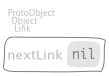
where the object nil is used to interrupt a chain of references; in particular, here we
have a chain of just one link object. To augment such a chain, we can
either create a new
Linkobject and then link the previous one to it,"CTLinksLinkTest, protocol tests" testLinkReferencingAnotherLink | l1 l2 | l1 := Link new. l2 := Link new. l1 next: l2. ^ self exportSlotsGraphOf: l1
or link the
Linkto itself to have an implicitly infinite chain,"CTLinksLinkTest, protocol tests" testLinkReferencingItself | l | l := Link new. l next: l. ^ self exportSlotsGraphOf: l

by the message next: understood by Link objects,
"Link, protocol *Containers-Essentials"
next: anObject
^ anObject nextOfLink: self
that dispatches the message
"Link, protocol *Containers-Essentials"
nextOfLink: aLink
^ aLink nextLink: self
that dispatches back the message
"Link, protocol accessing"
nextLink: aLink
"Store the argument, aLink, as the link to which the receiver refers.
Answer aLink."
^ nextLink := aLink
which sets the connection, actually. Of course, we can create arbitrary long (possibly endless) chains,
"CTLinksLinkTest, protocol tests"
testThreeLinksReferencingEachOther
| l1 l2 l3 |
l1 := Link new.
l2 := Link new.
l3 := Link new.
l1 next: l2.
l2 next: l3.
l3 next: l1.
^ self exportSlotsGraphOf: l1

and we can skip and move forward with
"CTLinksLinkTest, protocol tests"
testLinkNext3
| l1 l2 l3 l |
l1 := Link new.
l2 := Link new.
l3 := Link new.
l1 next: l2.
l2 next: l3.
l3 next: l1.
l := l1 next: 2.
self
assert: l equals: l3;
assert: (l1 next: 3) equals: l1.
^ self exportSlotsGraphOf: l

by means of polymorphism over the nextOfLink: message also undertood by
Integer objects,
"Integer, protocol *Containers-Essentials"
nextOfLink: aLink
^ aLink nextInteger: self
that dispatches back again to Link objects
"Link, protocol *Containers-Essentials"
nextInteger: anInteger
| link |
link := self.
1 to: anInteger do: [ :i |
link
ifNil: [ SubscriptOutOfBounds signalFor: i ]
ifNotNil: [ link := link nextLink ] ].
^ link
to actually skim over the chain of links, raising an exception if a Link is
requested to skip too much,
"CTLinksLinkTest, protocol tests"
testThreeLinksTooMuchSkipping
| l1 l2 l3 |
l1 := Link new.
l2 := Link new.
l3 := Link new.
l1 next: l2.
l2 next: l3.
^ self should: [ l1 next: 10 ] raise: SubscriptOutOfBounds
ValueLink objects¶
A Link by itself encodes just a node of a chain. We can augment those
objects such that each node in the chain carries a value also, to have a
chain of values actually. Such new objects belong to the class
Link subclass: #ValueLink
instanceVariableNames: 'value'
classVariableNames: ''
package: 'Collections-Support-Links'
"A ValueLink is a Link containing a Value.
Adding an object to a LinkedList which is not a Link will create a ValueLink containing that object.
value - The object this link points to."
and the binary message
"Object, protocol associating"
~~> aValueLinkOrNil
"Answer a ValueLink between self and aValueLinkOrNil.
This message allows the receiver to be inserted in a chain of objects, terminated by nil."
"Code of ValueLink>>#nextLink: and ValueLink>>#value: are inline here for speed."
"(1 ~~> nil) = ValueLink new value: 1"
"(1 ~~> 'one') value >>> 1"
"(1 ~~> nil) nextLink >>> nil"
"Note that `value` can be ANY object; on the other hand, `nextLink` should be either another
ValueLink object or nil."
^ ValueLink basicNew
value: self;
nextLink: aValueLinkOrNil;
yourself
allows us to build a simple ValueLink as
"CTLinksValueLinkTest, protocol tests"
testSimpleValueLink
| l |
l := 1 ~~> nil.
^ self exportSlotsGraphOf: l
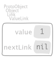
and by means of composition, to build an arbitrary long chain as
"CTLinksValueLinkTest, protocol tests"
test21ValueLinks
| l |
l := 2 ~~> self testSimpleValueLink.
^ self exportSlotsGraphOf: l
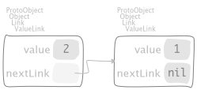
,
"CTLinksValueLinkTest, protocol tests"
test321ValueLinks
| l |
l := 3 ~~> self test21ValueLinks.
^ self exportSlotsGraphOf: l
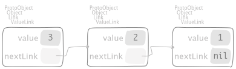
and
"CTLinksValueLinkTest, protocol tests"
test4321ValueLinks
| l |
l := 4 ~~> self test321ValueLinks.
^ self exportSlotsGraphOf: l

respectively.
Attention
The examples concerning recursion shows why a nested representation like
"CTLinksValueLinkTest, protocol tests"
test4321ValueLinksNested
| l |
l := 4 ~~> self test321ValueLinks.
^ self
exportSlotsGraphOf: l
slotDescriptorsContext: SlotDescriptorsVisitorNestedLinks new
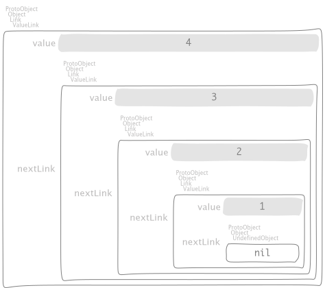
should be considered less expressive than the linked one.
As we have seen for Link objects, we can build a loop with ValueLink
objects too, either a cycle of length 1
"CTLinksValueLinkTest, protocol tests"
test11ValueLinksLoop
| l |
l := 1 ~~> nil.
l nextLink: l.
^ self exportSlotsGraphOf: l

or greater than 1
"CTLinksValueLinkTest, protocol tests"
test43214ValueLinks
| l1 l |
l1 := 1 ~~> nil.
l := 4 ~~> (3 ~~> (2 ~~> l1)).
l1 nextLink: l.
^ self exportSlotsGraphOf: l

The examples seen so far show a tight connection among the way we connect
ValueLinks with the strategy used by stacks to keep a collection of
objects; more about that will be explored in subsequent sections.
Topological sorting
Implementation of the Algorithm T in TAOCP by Donald Knuth, Volume 1 page 264.
The complexity is \(O(m + n)\) where \(m\) is the number of input
relations and \(n\) is the number of (unique) objects represented by
naturals. The message send c topologicalSortOnCycleDo: b computes provided that:
cis a collection of associations \((j, k) \in [1, n]^{2}\) no holes allowed, namely every natural has to be used in at least one input relation.bis a block consuming a collection of associations forming a cycle.
The following implementation had been proposed in the PR https://github.com/pharo-project/pharo/pull/7457.
"SequenceableCollection, protocol *Containers-Links"
topologicalSortByAssociations: aRelation onCycleDo: cBlock
| topo |
topo := TopologicalSortAlgorithm new
size: self size;
relation: aRelation;
yourself.
^ topo
value: [ :ordering | ordering do: [ :anIndex | self at: anIndex ] ]
onCycleDo: [ :cycle |
| sequence |
sequence := Array streamContents: [ :aStream |
aStream nextPut: (self at: cycle first key).
cycle reverseDo: [ :anAssoc |
aStream nextPut: (self at: anAssoc key) ] ].
cBlock cull: sequence cull: cycle ]
where
"TopologicalSortAlgorithm, protocol enumerating" value: aBlock onCycleDo: cycleBlock | table sort qlink | table := self makeValueLinksTable. "T1: initialize. T4: scan for zeros." qlink := self initializeValueLinksTable: table; sinksOfValueLinksTable: table. sort := Array streamContents: [ :aStream | self sortOn: aStream sinksValueLink: qlink valueLinksTable: table ]. ^ sort size < size ifTrue: [ self handleCycleInValueLinksTable: table do: cycleBlock ] ifFalse: [ aBlock value: sort ]where
"TopologicalSortAlgorithm, protocol enumerating" makeValueLinksTable "COUNT: the number of direct predecessors of this object." "TOP: link to the beginning of the list of direct successors of this object." ^ (1 to: size) collect: [ :k | 0 -> nil ]and
"TopologicalSortAlgorithm, protocol enumerating" initializeValueLinksTable: table "T2: next relation." relation do: [ :anAssoc | | j k | "Unpack `relation` such that `relation = (j -> k)` holds." j := anAssoc key. k := anAssoc value. "T3: Increase COUNT by one." (table at: k) in: [ :destAssoc | destAssoc key: destAssoc key + 1 ]. "T3: record the relation." (table at: j) in: [ :sourceAssoc | "Operation (8)" sourceAssoc value: k ~~> sourceAssoc value ] ]and
"TopologicalSortAlgorithm, protocol enumerating" sinksOfValueLinksTable: table ^ (1 to: size) foldr: [ :k :aValueLink | (table at: k) ifSink: [ k ~~> aValueLink ] otherwise: [ aValueLink ] forTopologicalSortAlgorithm: self ] init: nilwhere
"Association, protocol *Containers-Links" ifSink: sBlock otherwise: oBlock forTopologicalSortAlgorithm: aTSA ^ key ifZero: sBlock ifNotZero: oBlockand
"TopologicalSortAlgorithm, protocol enumerating" sortOn: aStream sinksValueLink: qlink valueLinksTable: table | f | f := qlink. [ f ] whileNotNil: [ | aValueLink anIndex | "T5: output front of queue." anIndex := f value. aStream nextPut: anIndex. "T7: remove from queue." f := f nextLink. aValueLink := (table at: anIndex) in: [ :anAssoc | anAssoc value yourself: [ anAssoc value: nil ] ]. "T6: erase relations." aValueLink do: [ :k | | kIndex | kIndex := k value. (table at: kIndex) decrementCountIfZero: [ f := kIndex ~~> f ] forTopologicalSortAlgorithm: self ] ]where
"Object, protocol *Kernel-Extensions" yourself: aBlock "I invoke the given block giving myself as argument if it needs to consume me. Then I return my self discarding the value returned by the given block." ^ aBlock cull: self; itself: selfand
"Association, protocol *Containers-Links" decrementCountIfZero: zBlock forTopologicalSortAlgorithm: aTSA ^ (key := key - 1) ifZero: zBlockand
"TopologicalSortAlgorithm, protocol enumerating" handleCycleInValueLinksTable: table do: cycleBlock | kk cycle qlink | "T9" qlink := Dictionary new. 1 to: size do: [ :k | | assoc p | assoc := table at: k. p := assoc value yourself: [ assoc value: 0 ]. "T10" p do: [ :each | qlink at: each value put: k ] ]. "T11" kk := qlink anyAssociation key. "T12" [ (table at: kk) value: 1. kk := qlink at: kk. (table at: kk) value = 0 ] whileTrue. "T13" cycle := Array streamContents: [ :aStream | [ aStream nextPut: kk. (table at: kk) value: 0. kk := qlink at: kk. (table at: kk) value = 1 ] whileTrue. aStream nextPut: kk ]. "Invoke the given block with the detected cycle." ^ cycleBlock value: (cycle overlappingPairsCollect: [ :a :b | b -> a ])where
"Dictionary, protocol *Containers-Essentials" anyAssociation "I mimic the message `Collection>>#anyone` with respect to associations that I collect." self emptyCheck; associationsDo: [ :assoc | ^ assoc ]
Testing for acyclic property can be done with the following message:
"SequenceableCollection, protocol *Containers-Links"
isAcyclicWithRespectToAssociations: aRelation
| isAcyclic |
isAcyclic := true.
self
topologicalSortByAssociations: aRelation
onCycleDo: [ isAcyclic := false ].
^ isAcyclic
Some tests are in order:
"CollectionTest, protocol *Containers-Links-Tests"
testTopologicalSortOnCycleDo
"The following test is kept from TAOCP by Donald Knuth, Volume 1 page 272."
self
assert: ((1 to: 9)
topologicalSortByAssociations: {
(9 -> 2).
(3 -> 7).
(7 -> 5).
(5 -> 8).
(8 -> 6).
(4 -> 6).
(1 -> 3).
(7 -> 4).
(9 -> 5).
(2 -> 8) }
onCycleDo: [ Error signal ])
equals: #( 1 3 7 4 9 2 5 8 6 )
"CollectionTest, protocol *Containers-Links-Tests"
testTopologicalSortOnCycleDo1
"This test stress four small cycles detection."
| cycleBlock |
cycleBlock := [ :sequence :cycle | sequence , cycle ].
self
assert: ({ #a }
topologicalSortByAssociations: { (1 -> 1) }
onCycleDo: cycleBlock)
equals: {
#a.
#a.
(1 -> 1) }.
self
assert: ({ #a. #b }
topologicalSortByAssociations: {
(1 -> 2).
(2 -> 1) }
onCycleDo: cycleBlock)
equals: {
#a.
#b.
#a.
(1 -> 2).
(2 -> 1) }.
self
assert: ({ #a. #b. #c }
topologicalSortByAssociations: {
(1 -> 2).
(2 -> 3).
(3 -> 1) }
onCycleDo: cycleBlock)
equals: {
#a.
#b.
#c.
#a.
(1 -> 2).
(3 -> 1).
(2 -> 3) }.
self
assert: ({ #a. #b. #c. #d. #e }
topologicalSortByAssociations: {
(5 -> 1).
(1 -> 2).
(2 -> 3).
(3 -> 5).
(3 -> 4) }
onCycleDo: cycleBlock)
equals: {
#c.
#e.
#a.
#b.
#c.
(3 -> 5).
(2 -> 3).
(1 -> 2).
(5 -> 1) }
"CollectionTest, protocol *Containers-Links-Tests"
testTopologicalSortOnCycleDo2
"The following test is kept from https://upload.wikimedia.org/wikipedia/commons/0/03/Directed_acyclic_graph_2.svg."
self
assert: ((1 to: 8)
topologicalSortByAssociations: {
(1 -> 4).
(2 -> 4).
(2 -> 5).
(3 -> 5).
(3 -> 8).
(4 -> 6).
(4 -> 7).
(4 -> 8).
(5 -> 7) }
onCycleDo: [ Error signal ])
equals: #( 1 2 4 6 3 5 7 8 )
"CollectionTest, protocol *Containers-Links-Tests"
testTopologicalSortOnCycleDo3
"This test case shows how to iteratively removing edges
belonging to a cycle to yield an acyclic relation."
| aRelation m |
m := 100.
aRelation := self randomRelationOfSize: 1000 max: m.
(1 to: m)
topologicalSortByAssociations: aRelation
acyclicDo: [ :ordering :edges |
self
assert: ordering
equals:
#( 64 78 75 80 84 95 70 71 85 99 62 97 73 88 90 82 60 92 81 83 77
93 59 96 98 89 91 69 67 74 86 7 48 100 55 39 68 65 44 20 87 66
58 35 41 46 32 76 37 43 94 40 57 72 16 33 54 47 1 2 13 21 38
30 19 50 6 29 4 14 52 9 11 42 10 22 61 18 12 24 25 34 27 28 31
45 17 3 79 36 63 8 56 49 51 15 26 23 53 5 ).
self assert_testTopologicalSortOnCycleDo3_edgesEqualsTo: edges ]
where
"SequenceableCollection, protocol *Containers-Links" topologicalSortByAssociations: aRelation acyclicDo: aBlock | ordering edges | edges := Array streamContents: [ :aStream | [ | isAcyclic | isAcyclic := true. ordering := self topologicalSortByAssociations: aRelation onCycleDo: [ :sequence :cycle | | edge | isAcyclic := false. edge := cycle anyOne. aStream nextPut: edge. aRelation remove: edge. sequence ]. isAcyclic ] whileFalse ]. ^ aBlock value: ordering value: edges
LinkedList containers¶
ValueLink objects are small and allow us to compose them in an applicative
way so that we can share part of a composite structure among different client
objects so that those clients don’t observe any side effect on the
ValueLink objects they are currently referencing.
By the way, some applications prefer to have a manager object that handles those links as a whole, hiding the inner machinery that keeps their structure sound. Those managers are called containers.
A ValueLink understands the #asLinkedList message to enclose itself in
a LinkedList container
SequenceableCollection subclass: #LinkedList
instanceVariableNames: 'firstLink lastLink'
classVariableNames: ''
package: 'Collections-Sequenceable-Base'
for example,
"CTLinksValueLinkTest, protocol tests"
testAsLinkedList
^ self exportSlotsGraphOf: self testSimpleValueLink asLinkedList
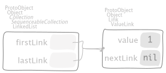where
"ValueLink, protocol *Containers-Essentials" asLinkedList | list | list := LinkedList empty. self do: [ :each | list addLast: each value ]. ^ listwhere
"Link, protocol *Containers-Essentials" do: aBlock | link | link := self. [ link ] whileNotNil: [ aBlock value: link. link := link nextLink. link == self ifTrue: [ link := nil ] ]
Two observations are in order:
On one hand, since the slot
nextLinkhosts either aLinkornilthen the latter has to understand"UndefinedObject, protocol *Kernel-Extensions" asLinkedList ^ LinkedList empty
too and it behaves as follows
"CTLinksValueLinkTest, protocol tests" testNilAsLinkedList ^ self exportSlotsGraphOf: nil asLinkedList

On the other hand, since a
ValueLinkcould keep a recursive structure then all the values are kept as well"CTLinksValueLinkTest, protocol tests" testAsLinkedList4321 ^ self exportSlotsGraphOf: self test4321ValueLinks asLinkedList
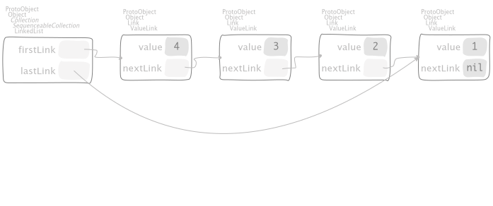
Additionally, LinkedList objects can be built using other objects than
ValueLink ones, for example sending #as: to an Interval,
"CTLinksValueLinkTest, protocol tests"
testAsLinkedListFromInterval
^ self exportSlotsGraphOf: ((4 to: 1 by: -1) as: LinkedList)
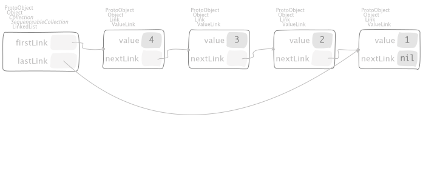where
"Number, protocol *Collections-Sequenceable" to: stop by: step "Answer an Interval from the receiver up to the argument, stop, incrementing by step." ^ Interval from: self to: stop by: stepand
SequenceableCollection subclass: #Interval instanceVariableNames: 'start stop step' classVariableNames: '' package: 'Collections-Sequenceable-Base' "I represent a finite arithmetic progression (a range of number). Description -------------------------- I allow to iterate easily on a range of number (for example to manupulate an index) with a define step (by default one by one). Zero step size is not allowed and will raise an error. I know at which number I begin, at which number I end and the step. I work with the Number class. I manipulate some numbers and I can be created from a Number. Public API and Key Messages -------------------------- - I implement most of the classic Iterators as #do: or #collect:. - #from: to: and #from: to: by: are my two common contructors. But I am usually created by a message send on Number (See examples). Examples -------------------------- To create an Interval from 1 to 100 there is many ways: Interval from: 1 to: 100 or Interval from: 1 to: 100 by: 1 or from a Number 1 to: 100 or 1 to: 100 by: 1 You can also use floats or fractions: 0.1 to: 0.5 by: 0.01 or 1/10 to: 1/2 by: 1/100 NB: both expressions will not give exactly the same result. The first will contains only floats and the second only fractions. Internal Representation and Key Implementation Points. -------------------------- Instance Variables start: <Number> The beginning of the Interval. step: <Number> The end of the Interval. stop: <Number> The step of the interval. If the step is 3 and we begin at 1 the interval will be 1, 4, 7, 10, 13… until the end."
Moreover, from a SequenceableCollection we can revert back to a ValueLink with,
"SequenceableCollection, protocol *Collections-Abstract-Extensions"
asValueLink
^ self
foldr: [ :each :aValueLink |
ValueLink new
value: each;
nextLink: aValueLink;
yourself ]
init: nil
where
#foldr:init:folds by associating to the right,"SequenceableCollection, protocol *Collections-Abstract-Extensions" foldr: aBlock init: init | cell | cell := init. self reverseDo: [ :each | cell := aBlock value: each value: cell ]. ^ cell
as we can see in the following example
"CTLinksValueLinkTest, protocol tests"
testAsValueLink
^ self exportSlotsGraphOf: (4 to: 1 by: -1) asValueLink
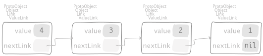
Using another folding message #inject:into: that associates to the left,
"Collection, protocol enumerating"
inject: thisValue into: binaryBlock
"Accumulate a running value associated with evaluating the argument, binaryBlock, with the current value of the argument, thisValue, and the receiver as block arguments."
"( #(1 2 3) inject: 0 into: [ :sum :each | sum + each ] ) >>> 6"
| nextValue |
nextValue := thisValue.
self do: [ :each |
nextValue := binaryBlock value: nextValue value: each ].
^ nextValue
we obtain a ValueLink that keeps the same elements in reversed order,
"CTLinksValueLinkTest, protocol tests"
testAsValueLinkInjectInto
| l |
l := (4 to: 1 by: -1)
inject: nil
into: [ :aValueLink :each | each ~~> aValueLink ].
^ self exportSlotsGraphOf: l

Storage pools¶
The Knuth’s description of linked allocation begins at page 254 of [Knu97].
Note
“But even more importantly, there is often an implicit gain in storage by the linked memory approach, since tables can overlap, sharing common parts; […] The usefulness of linked memory is predicated on the fact that in the large majority of applications we want to walk through lists sequentially, not randomly. […] The linked scheme lends itself immediately to more intricate structures that simple linear lists. We can have a variable number of variable-size lists; any node of the list may be a starting point for another list; the nodes may simultaneously be linked together in several orders corresponding to different lists; and so on.”
—Donald E. Knuth
We start with the mechanism that supplies space for a new node, by the class
Object subclass: #CTLinkedStoragePool
instanceVariableNames: 'avail'
classVariableNames: ''
package: 'Containers-LinkedStoragePool'
which implements both operation (4),
"CTLinkedStoragePool, protocol initialization"
allocateOrReuseLink
^ avail
ifNil: [ self newLink ]
ifNotNil: [ avail yourself: [ avail := avail nextLink ] ]
where
"CTLinkedStoragePool, protocol initialization"
newLink
^ ValueLink new
and operation (5)
"CTLinkedStoragePool, protocol initialization"
releaseLink: aValueLink
aValueLink nextLink: avail.
avail := aValueLink
allow us to call storage pool the set of all nodes that can be allocated according to these messages.
Stack pool¶
"CTLinkedStoragePoolTest, protocol tests"
testEmptyStack
| stack |
stack := CTLinkedStoragePoolStack new.
^ self
assert: stack isEmpty;
exportSlotsGraphOf: stack

Have a look at the following manipulations, starting with an empty stack pool,
"CTLinkedStoragePoolTest, protocol tests"
testSomePushesThenPopsOnStack
| stack steps |
steps := OrderedCollection new
add: (Message selector: #push: arguments: { 3 });
add: (Message selector: #push: arguments: { 4 });
add: (Message selector: #push: arguments: { 5 });
add: (Message selector: #pop);
add: (Message selector: #pop);
add: (Message selector: #pop);
add: (Message selector: #push: arguments: { 6 });
yourself.
stack := CTLinkedStoragePoolStack new.
steps withIndexDo: [ :each :i |
each sendTo: stack.
self exportSlotsGraphOf: stack pathSuffix: i asString ]
by pushing 3,
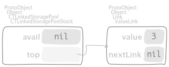then push 4,
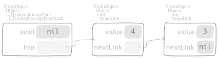then push 5,

then pop,
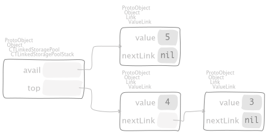then pop,
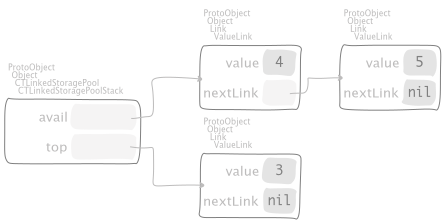then pop,

then push 6,

respectively. We cannot pop from an empty stack,
"CTLinkedStoragePoolTest, protocol tests"
testPopFromEmptyStack
self
should: [
CTLinkedStoragePoolStack new
push: 3;
pop;
pop ]
raise: CollectionIsEmpty
as required. Finally, lets see how to swipe the entire pool in one shot,
"CTLinkedStoragePoolTest, protocol tests"
testRemoveAllFromStack
| queue |
queue := (1 to: 5)
inject: CTLinkedStoragePoolStack new
into: [ :pool :each | pool push: each ].
queue
pop;
pop.
self exportSlotsGraphOf: queue pathSuffix: 'full'.
queue removeAll.
self exportSlotsGraphOf: queue pathSuffix: 'empty'
first push 5 elements and then pop 2 of them in order to have some room available,

then swipe out by means of the message
"CTLinkedStoragePoolStack, protocol removing"
removeAll
| link |
top ifNotNil: [
link := top.
[ link nextLink ] whileNotNil: [ link := link nextLink ].
link nextLink: avail.
avail := top.
top := nil ]
to have
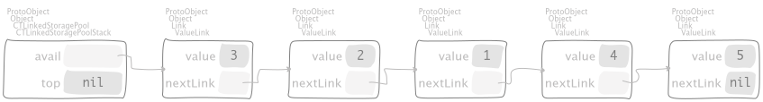as required.
Queue pool¶
"CTLinkedStoragePoolTest, protocol tests"
testEmptyQueue
| queue |
queue := CTLinkedStoragePoolQueue new.
^ self
assert: queue isEmpty;
exportSlotsGraphOf: queue
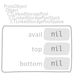
Have a look at the following manipulations, starting with an empty queue pool,
"CTLinkedStoragePoolTest, protocol tests"
testSomePushesThenPopsOnQueue
| stack steps |
steps := OrderedCollection new
add: (Message selector: #push: arguments: { 3 });
add: (Message selector: #push: arguments: { 4 });
add: (Message selector: #push: arguments: { 5 });
add: (Message selector: #pop);
add: (Message selector: #pop);
add: (Message selector: #pop);
add: (Message selector: #push: arguments: { 6 });
yourself.
stack := CTLinkedStoragePoolQueue new.
steps withIndexDo: [ :each :i |
each sendTo: stack.
self exportSlotsGraphOf: stack pathSuffix: i asString ]
by pushing 3,

then push 4,
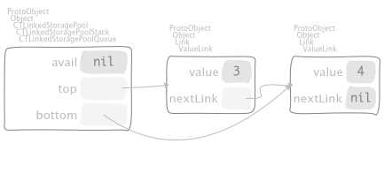then push 5,

then pop,

then pop,

then pop,
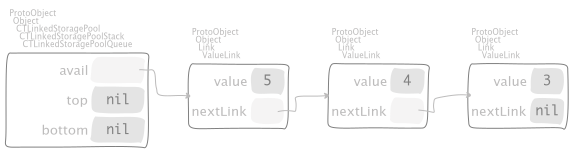then push 6,

respectively. We cannot pop from an empty queue,
"CTLinkedStoragePoolTest, protocol tests"
testPopFromEmptyQueue
self
should: [
CTLinkedStoragePoolQueue new
push: 3;
pop;
pop ]
raise: CollectionIsEmpty
as required. Finally, lets see how to swipe the entire pool in one shot,
"CTLinkedStoragePoolTest, protocol tests"
testRemoveAllFromQueue
| queue |
queue := (1 to: 5)
inject: CTLinkedStoragePoolQueue new
into: [ :pool :each | pool push: each ].
queue
pop;
pop.
self exportSlotsGraphOf: queue pathSuffix: 'full'.
queue removeAll.
self exportSlotsGraphOf: queue pathSuffix: 'empty'
first push 5 elements and then pop 2 of them in order to have some room available,
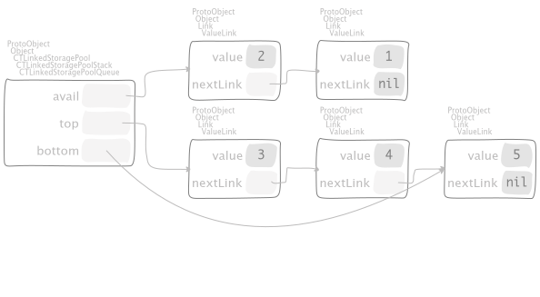then swipe out by means of the message
"CTLinkedStoragePoolQueue, protocol removing"
removeAll
top ifNotNil: [
bottom nextLink: avail.
avail := top.
top := bottom := nil ]
to have
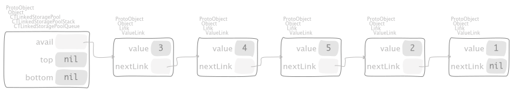as required.